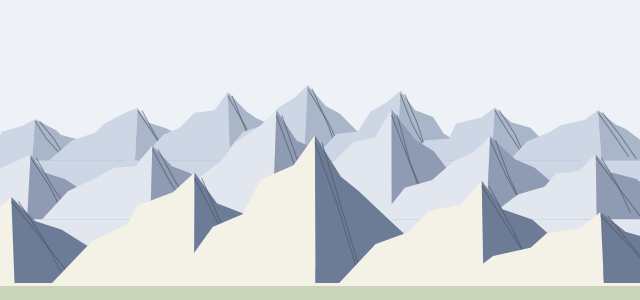

山並みの描き方(絵の観点の調査と方法論)
概要: 段階6の山が「3Dっぽいだけでデフォルメできていない」という指摘(2026-11-18)を受け、山を「絵」として描く手法を調べました。結論は、山を1つずつ立体にせず、「尾根の線(骨組み)」を先に決め、奥から手前へ重ねる平らな形で描くことです。立体の再現ではなく、「どれが手前でどれが奥か」と「明るい面と暗い面」だけを描き分けます。
調べて分かった描き方
- 骨組みから描く: 山脈は、まず1本の主な尾根の線を描きます(高い峰へ段々に上がり、反対側で下がる)。そこから峰ごとに枝の尾根を出し、枝の間に谷を入れます。(fantasticmaps、横から見た山脈)
- 奥から手前へ重ねる: 手前の山は奥の山のふもとを隠します。重なるとき、どちらが前かをはっきりさせます。(同上、斜めの山)
- 尾根は途切れさせてつなぐ: 尾根の線を次の峰の手前で止め、少しずらして終わらせると、山の陰に隠れて再び現れるように見え、連なりに見えます。(同上)
- 形はそろえない: 輪郭の形をばらつかせ、線はまっすぐにも滑らかにもしません。ぎざぎざ、不ぞろいにします。(同上、真上から見た山)
- 明暗は2面だけ: 暗い面に線を多く・太くして、明るい面は紙のまま。一番暗いのは峰の近くで、離れるほど薄くします。(同上)
- 水の流れと両立: 尾根は輪にしません(水がたまるため)。どの峰も川の源になります。(同上)
- 歴史的な方法: 山を横から見た小さな絵(丘の側面)は最も古い方法で、広い地域を縮小した地図に向きます。ラーイス(Erwin Raisz)は、側面図に陰影と「ならした質感」を合わせ、山の「ごつごつ具合・向き・性格」を伝えました。数値は測れませんが、風景として伝わります。ただし、作り手の個性が強く、コンピュータでの自動化には向かないと本人が述べています。(makingmaps、Wikipedia)
- 計算での再現: パターソン(Tom Patterson)の方法は、標高に比例して画素を北へずらし、山を「立ち上げる」だけです。見た目は立体的ですが、これは今回のような「3Dっぽい」描き方そのものです。
- 小縮尺の注意: 縮小すると、細かい凸凹が目立ち、小さな険しい丘が、大きな滑らかな山と同じくらい目立ってしまいます。高い山を読み取りやすくするには、細部をならして主な形を残します(分解能の調整)。
描き方の方法論(案)

絵番号 E018上の絵は、方法論の考え方を示す模式図です(実際の地図の山ではありません)。奥の列を薄く小さく、手前の列を濃く大きく重ね、すべての山で明るい面を左、暗い面を右にしています。
- 尾根の線を決める: 地図の標高が高い所の山の背を結んで、1本の主尾根の線にします。山を1つずつ置くのではなく、線に沿って峰を並べます。線は輪にしません。
- 枝の尾根と谷: 主尾根の峰から、手前と奥の両方へ枝の尾根を出します。枝の間は谷で、地図の川はこの谷につなぎます。
- 奥から手前へ描く: 緯度の北(奥)の山から順に描き、手前が奥のふもとを隠します。奥ほど小さく・薄くします。
- 面は2つだけ: 光は1方向(左上)で、明るい面は淡い色、暗い面は濃い色と線を足します。立体の細かい陰影(滑らかな階調)は使いません。
- 輪郭はぎざぎざに: 峰ごとに輪郭の折れ方を変えます。ここで、実際の山の形(コサイン類似度の候補)を使い、峰の左右の傾きや肩の位置の選び方に使います。形そのものをなぞるのではなく、選ぶ材料にします。
- 尾根のつなぎ: 尾根の端は次の峰の手前で止め、少しずらします。
- ふもと: 山のふもとは、色を平地へなだらかにつなぎ、地面の色(5区分の色)と混ぜます。
段階6との違い
- 段階6: 山を1つずつ、標高から斜めに立ち上げた形で描いたため、立体の再現に近く、円すいが並んで見えた。
- 新方法: 線と重なりで山並みを描く。実際の山の形は、輪郭の折れ方の選択にだけ使う。
限界・未確認
- 吉田初三郎の鳥瞰図の山の描き方は、読めるページが得られず、調べられていません。
- 日本語で山並みの描き方を説明した記事は、有用なものが見つかりませんでした(検索結果は一般的な内容のみ)。
- 「ぎざぎざにする」「奥ほど薄くする」の程度の数値は、まだ決めていません。上の模式図は私が確認用に作った絵で、方法論の効果の証拠ではありません。
- 描き方の一部は、ファンタジー地図の解説サイト1つ(fantasticmaps)の説明に依っています。
- 主尾根の線を標高データから自動で見つける方法は、未検討です。
出典: fantasticmaps 横から見た山脈 / 同 真上から見た山 / makingmaps 地形の記号 / Wikipedia Terrain cartography